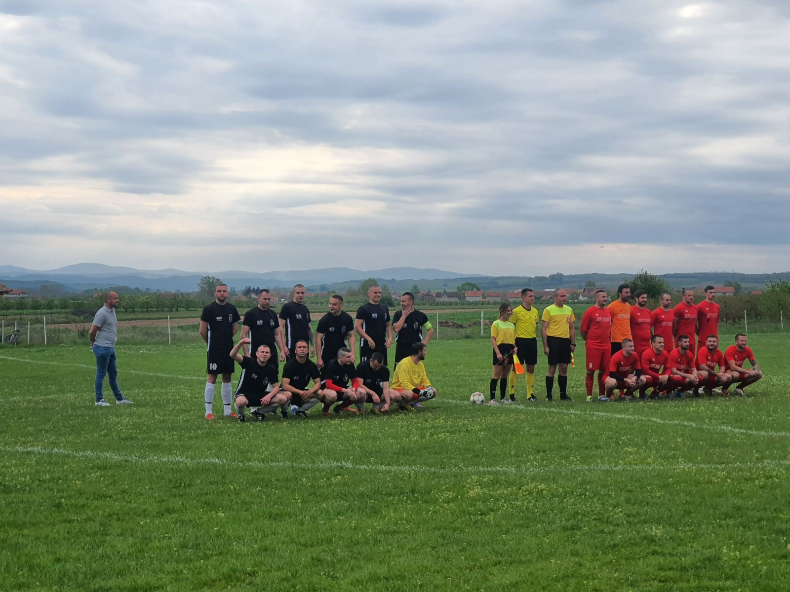

PHOTO FINISH OF THE MATCH: Atletico - Gornje Sinkovce 2:1

The opponent was slightly better. From the first to the last minute, the game was dynamic. Both teams had a couple of attempts, shots on goal, and a few solo breakthroughs. In the first half, the home team attacked with all players in the field, while our team threatened from the counter attack. In the very finish, the opposing attacker scores a goal for 1:0, and our team goes to rest with a goal behind. To make matters worse for our team, we conceded a goal immediately in the second half from the break. However, our boys did not give up and showed that they can get out of this situation. Ivan Dimitrijević sent a nice shot for Ivan Ilić, who forced a penalty in a one-on-one situation with the goalkeeper. Captain Danijel Kostić, safe from the penalty spot, reduces the advantage to 2:1. Until the end of the match, it was an extremely big fight, with a lot of fouls and interruptions. The referee handed out 7 yellow cards to our players. In the end, in the 92nd minute, everything looked as if the replay from Sinkovce in the autumn part of the half-season would be repeated. After the corner, the ball reached Marko Stojković, who tried to score a point in Sinkovce with a shot from the penalty area, but unfortunately, the home team remained invincible. Thank you to the host for the warm welcome, we wish them all the best and that they will be placed in the sixth division.